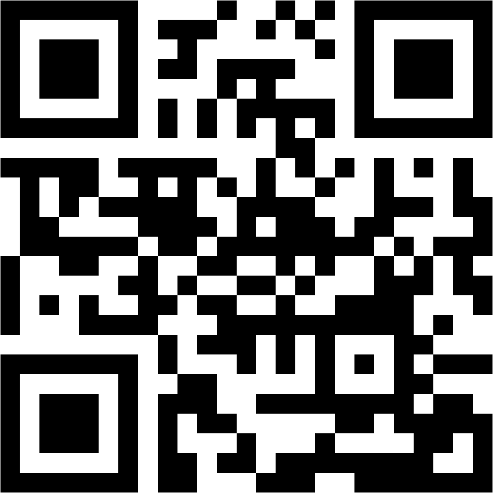

Recomandare
Pentru alegerea atomizorului, sarmei si buildului dupa NET, TUTUN, profil aromatic si intentia gustului.
Intrare rapida
Alege direct zona potrivita: recomandare dupa profilul lichidului, diagnostic gust sau lista orientativa de produse Smokee.
Pentru alegerea atomizorului, sarmei si buildului dupa NET, TUTUN, profil aromatic si intentia gustului.
Pentru gust ars, aroma slaba, NET incarcat, gurgling, TC instabil sau alte simptome aparute in setup.
Pentru o lista orientativa cu produse disponibile, aleasa dupa profilul RTA MTL si preferinta de lichid.
Pagina pentru incepatori explica ordinea corecta: lichidul ales, intentia gustului, atomizorul, sarma, buildul si abia apoi reglajele fine.
QR local pentru aceasta pagina de start. Poate fi pus in imagine, profil, afis, mesaj sau material de prezentare.
